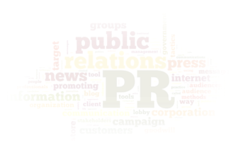
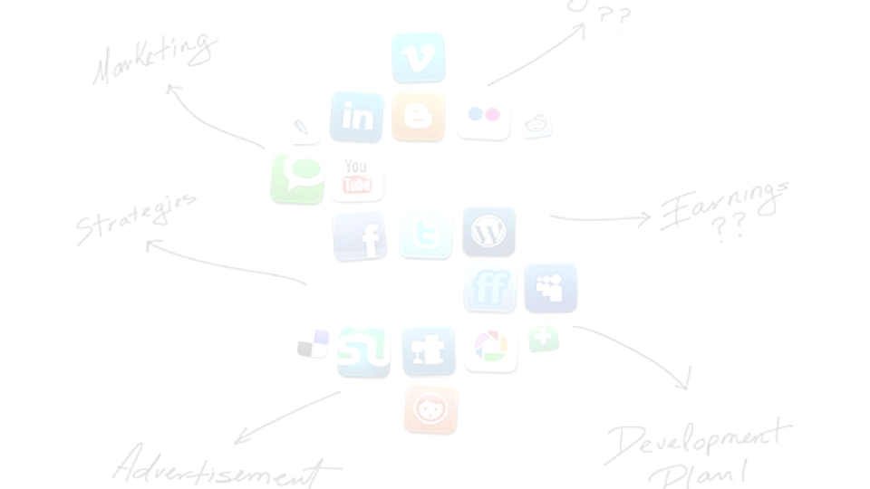

Мы специализируемся в сфере PR, конфликтологии, реализации коммуникационных
проектов.
Предоставляем услуги в следующих областях:
1PR-сопровождение;
2GR-менеджмент;
3SMM-маркетинг;
4Политический консалтинг;
5Конфликтология;

PR-сопровождение
1.Формирование благоприятного отношения общества к политическим и
бизнес-структурам в Москве и регионах страны;
2.Мониторинг СМИ с целью изучения характера и количества информации
об организации;
3.Проведение встреч с журналистами: интервью, пресс-конференций,
брифингов, пресс-туров и т. д.;
4.Подготовка информационных поводов, пресс-релизов, - инициирование
медиаматериалов об организации;
5.Реагирование на появление в СМИ негативной информации об
организации, предотвращение подобных фактов;
6.Разработка информационной
кампании в кризисной ситуации;
7.Различного рода
мероприятий: PR- и промо-акций, конференций,
бизнес-тренингов, Проведениесоциальных акций с целью
привлечения внимания общества к деятельности организации;
8.Ведение корпоративного
сайта, информационное сопровождение
социальных проектов и пиар-кампаний в соц.сетях (SMM);
GR-менеджмент
1.Организация взаимодействия, продвижения и защиты интересов компании в органах государственной власти и общественных организациях;
2.Организация специализированных выставок и конференций для представителей государственных органов;
3.Проведение семинаров и презентаций для представителей государственных органов;
4.Проведение анализа и отслеживание законодательных и политических тенденций;

SMM-маркетинг
1.Мониторинг ресурсов сети Интернет 24/7 в
режиме on-line
2.Сокращение временных затрат на поиск и
систематизацию интересующей информации
3.Набор инструментов для анализа и
визуализации информации
4.Качественная аналитическая деятельность
5.Контроль за различными сферами деятельности
региона
6.Мониторинг и предотвращение протестной
активности населения
7.Выявление резонансных событий
8.Отслеживание важных новостей в режиме
реального времени
9.Мониторинг деятельности значимых лиц и организаций
10.Размещение публикаций по темам конфликтов
11.Мониторинг социальных сетей и блогосферы (аналитический
продукт со сбором цитат и ссылок на релевантные обсуждения)
12.Подбор релевантных площадок, анализ блогосферы, подбор
площадок (форумов, сообществ в соцсетях, популярных блогов
и микроблогов), которые подходят по тематике и географии.
13.Работа с комментариями. Ежедневный посев основных сообщений кампании.
14.Работа с авторитетными блогерами
15.Ежедневная отчетность о деятельности в интернете
Политический консалтинг
1.
Социология и аналитика:
Экспертные интервью, Глубинные интервью;
Фокус-группы;
Количественные опросы;
Медиа-аналитика;
2.Стратегирование кампаний
3.Организация работы штаба
4.
Эвенты:
Проведение масштабных мероприятий – значимых информационных поводов, в том числе, с возможностью
проверки
мобилизационных сетей;
Разработка и реализация фоновых/имиджевых мероприятий местного и регионального уровня, с участием одного
или
нескольких кандидатов;
Встречи кандидатов с избирателями;
Сопровождение всей текущей активности кандидатов и партии в целом;
Привлечение к компании лидеров общественного мнения;
Организация и/или сопровождение деятельности «общественных приемных» и «горячих линий»;
Синхронизация деятельности/активности кандидатов и партии с актуальной федеральной повесткой;
5.
Работа с АПМ, медиа, Internet, SMM
Разработка «бренд-бука» кампании;
Разработка и размещение АПМ, наружной рекламы, графики для соц. сетей, сувенирной продукции,
эксклюзивных
рекламных носителей и конструкций и т.д.;
Создание и размещение материалов для печатных и интернет СМИ, активное ведение пиар-кампании в
социальных сетях;
Конфликтология
Проведение публичных слушаний:
1.Подбор модератора;
2.Подготовка и реализация спец-мероприятий для формирования общественного мнения относительно предмета слушаний;
3.Планирование зала, мобилизация и регистрация участников слушаний;
4.Подготовка групп реагирования (коммуникаторов, групп «мягкого воздействия» - фото- видеосъемка, запись ФИО)
для нейтрализации негативно настроенных участников;
5.Планирование слушаний «под ключ»
6.Организация подписной кампании
7.Подготовка группы фото- видео- мониторинга хода слушаний;
8.Тренинг спикеров – представителей застройщика;
9.Подготовка вопросов и ответов;
10.Приглашение СМИ, работа с прессой;
11.SMM-поддержка, коррекция инфополя;
Работа на территории:
1.Мониторинг и анализ текущей ситуации;
2.Формирование районного актива;
3.Работа с муниципальными депутатами и депутатами МГД;
4.Отработка карты конфликтов округа;
5.Мониторинг и отработка социальных сетей округа;
6.Контркампания против оппозиционнеров;
7.Организация и участие в митингах, пикетах, круглых столах;